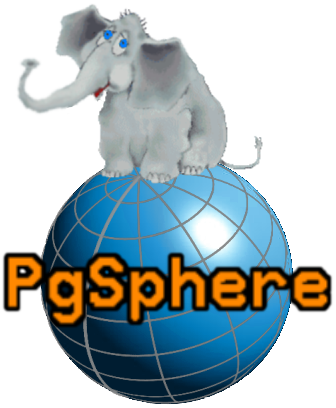
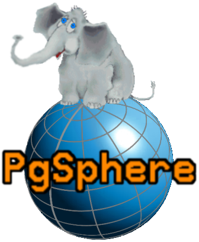
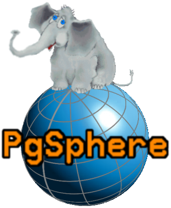

Летняя школа. Postgres.
Дурачок Глупый
 

Дурачок Глупый

Кому это нужно? Например астрономам.
Много кто пользуется, большой спрос, поэтому важно исправлять ошибки и добавлять новые фичи
В чем суть задачи:
Тяжело работать с рассеянным скоплением звезд(например)
удобней работать с одной звездой, поэтому полезно реализовать центр масс
SELECT @@ ARRAY[
spoint(40.7128, -74.0060),
spoint(34.0522, -118.2437),
spoint(37.7749, -122.4194)
] AS center;
center
----------------------------------------
(3.04366980631979 , 0.858938068921891)
(1 row)SELECT center(ARRAY[
spoint(0, 10),
spoint(0, -10),
]);
center
----------------------------------------
(0 , 0)
(1 row)
for (i = 0; i < num_elements; i++)
{
spoint_vector3d(&v, &array_data[i]);
point_coords.x += v.x;
point_coords.y += v.y;
point_coords.z += v.z;
}
point_coords.x /= num_elements;
point_coords.y /= num_elements;
point_coords.z /= num_elements;